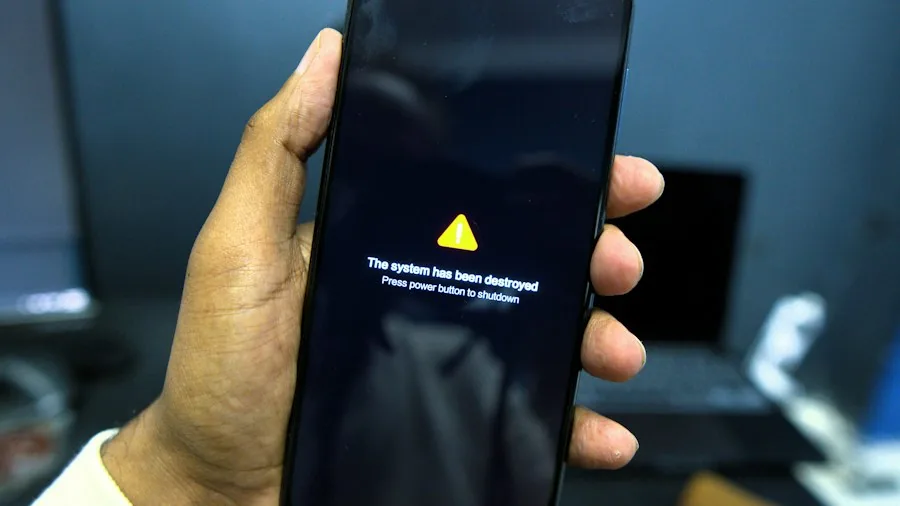
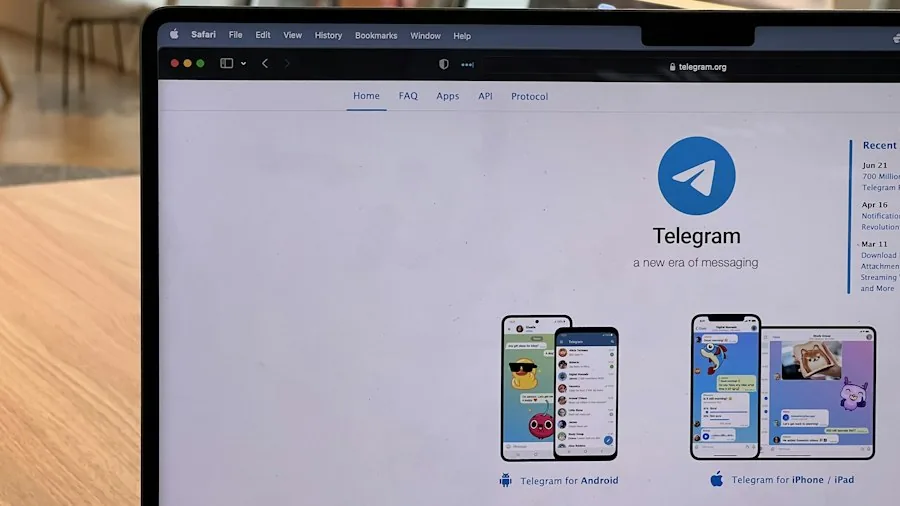
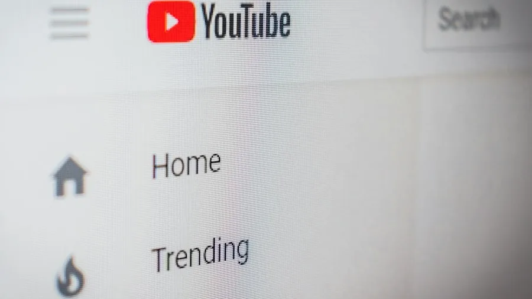
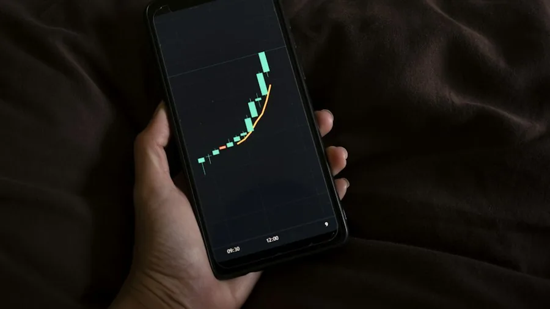
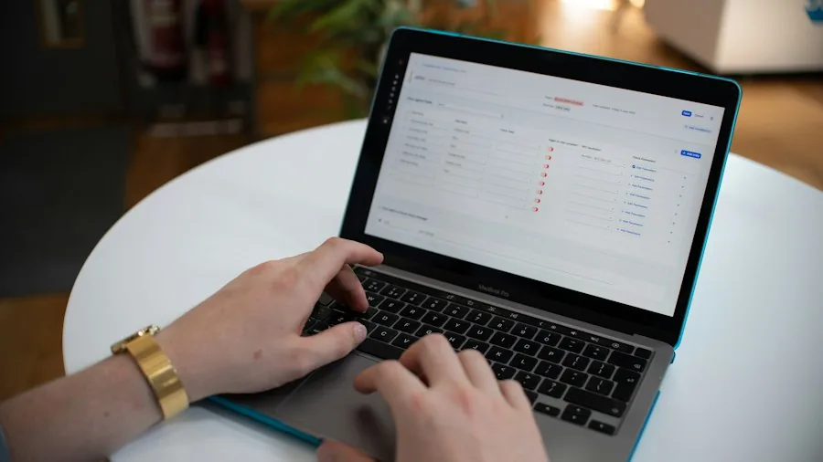
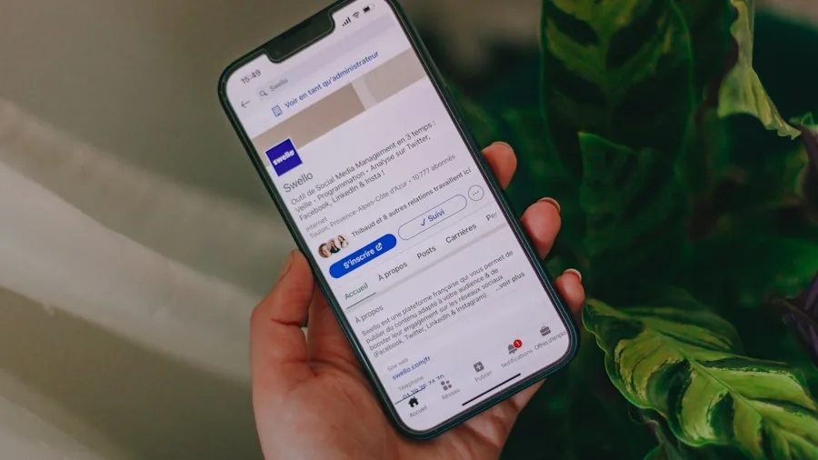

Блог Fast Scheduler
Развивайте свой Telegram-канал
Заметки о росте Telegram-каналов — для владельцев каналов, а не для поисковиков. Без воды и списков «10 хаков»: только то, что работает, от людей, которые живут планированием постов.
Рост
Подписчики, свапы, поиск и удержание — стратегии, которые работают на перспективу.

Статьи · Рост15 Telegram Channel Mistakes That Quietly Kill GrowthThe mistakes that don’t announce themselves: stacking posts, dead-hour publishing, caption walls, fake-subscriber temptations, ignoring the…Статьи · РостHow to Research a Telegram Niche Before You Start a ChannelA data-first niche validation routine: TGStat/Telemetr catalogs, engagement-rate math, gap analysis, and the 10-question checklist that pred…Статьи · РостTelegram for Local Businesses: A Channel That Customers Actually ReadWhy local channels outperform local social pages: geo search, neighborhood mechanics, what to post between promos, and the booking/notificat…Статьи · РостHow to Move a Telegram Channel: Merging, Renaming and Migrating AudiencesChanging a channel’s identity the safe way: renames that keep subscribers, the merge problem (Telegram has no merge), redirect channels, con…Статьи · РостAdvertising in Telegram: How Paid Promos Actually Work in 2026Where to buy posts (Telega.in, direct deals, Telegram Ads), what promo posts convert, how to price them, and how to tell a real channel from…Статьи · РостWhy Telegram Subscribers Leave (and How to Keep Them)The real reasons people mute or leave Telegram channels — posting walls, bait-and-switch, dead months — and the retention habits that keep a…Статьи · РостReferral Growth for Telegram Channels: What Actually WorksBot-based referral rewards, shareable invite mechanics, and the honest math on what referral growth costs — plus the failure modes that turn…
Статьи · РостTelegram Channel Name Ideas: 60+ Examples and the Naming Rules60+ Telegram channel name ideas by niche, the 5 rules behind names that get found in search, and the naming mistakes that quietly cost subsc…Статьи · РостTelegram Channel Description: Examples, Formulas and Limits25 Telegram channel description examples you can adapt, the 120-character formula that converts visitors, and what the description field act…
Статьи · РостTelegram for YouTubers: Turning Subscribers Into a CommunityHow YouTubers use Telegram channels to own their audience: what to post between uploads, launch workflows, and why Telegram beats link-in-bi…Статьи · Рост12 Telegram Analytics Mistakes That Quietly Mislead Channel OwnersThe reading errors behind most bad channel decisions — judging posts at the wrong hour, trusting subscriber counts, comparing channels that…Статьи · РостChannel Teardown: What a 40,000-Subscriber Telegram Channel Does DifferentlyA structural teardown of a mid-size channel that outperforms its size class — publishing rhythm, ERR discipline, monetization spacing and th…Статьи · РостFast Scheduler Referral Program (Beta): Earn Premium Days for InvitesHow the Fast Scheduler referral program works: why unlocking needs a connected channel plus one scheduled message, how both sides earn 3 Pre…Контент
Оформление, календари и контент-системы, которые держат канал на плаву.
Боты и инструменты
Стек ботов успешных каналов — планирование, аналитика, модерация.
 Статьи · Боты и инструментыHow to Automate a Telegram Channel (Without Losing Your Voice)The automation stack for serious channels — named: schedulers (ManyBot, ControllerBot, Fast Scheduler), RSS bridges, moderation bots, analyt…Статьи · Боты и инструментыHow to Create Your Own Telegram Bot with BotFather (Step by Step)BotFather from zero: /newbot, tokens, descriptions and avatars, commands, privacy mode, inline mode — and what you can realistically build w…Статьи · Боты и инструментыTelegram Analytics Compared: TGStat vs Telemetr vs Your Scheduler’s StatsWhat each analytics layer actually measures — TGStat’s ERR and citation index, Telemetr’s ad analytics, Combot for groups, and built-in sche…Статьи · Боты и инструментыThe Channel Owner’s Bot Cheatsheet: Commands Worth MemorizingThe commands that actually matter across the tools you already use: BotFather essentials, scheduling basics, TGStat lookups, moderation stap…Статьи · Боты и инструментыRSS-to-Telegram Bots: Auto-Posting Feeds Without Losing Your VoiceHow RSS bridge bots turn any feed into channel posts — setup, filtering, rate limits, and the two rules that keep automated feeds from killi…Статьи · Боты и инструментыModeration Bots for Telegram Discussion Groups: Rose, Shieldy, CombotThe moderation stack for linked discussion groups — anti-spam, captcha, caps and link filters, warning systems — and how to configure them w…Статьи · Боты и инструментыTelegram Scheduling Tools Compared: Bots, Apps and Native OptionsA practical comparison of ways to schedule Telegram posts in 2026 — the native composer, ManyBot, ControllerBot, Fast Scheduler and self-hos…
Статьи · Боты и инструментыHow to Automate a Telegram Channel (Without Losing Your Voice)The automation stack for serious channels — named: schedulers (ManyBot, ControllerBot, Fast Scheduler), RSS bridges, moderation bots, analyt…Статьи · Боты и инструментыHow to Create Your Own Telegram Bot with BotFather (Step by Step)BotFather from zero: /newbot, tokens, descriptions and avatars, commands, privacy mode, inline mode — and what you can realistically build w…Статьи · Боты и инструментыTelegram Analytics Compared: TGStat vs Telemetr vs Your Scheduler’s StatsWhat each analytics layer actually measures — TGStat’s ERR and citation index, Telemetr’s ad analytics, Combot for groups, and built-in sche…Статьи · Боты и инструментыThe Channel Owner’s Bot Cheatsheet: Commands Worth MemorizingThe commands that actually matter across the tools you already use: BotFather essentials, scheduling basics, TGStat lookups, moderation stap…Статьи · Боты и инструментыRSS-to-Telegram Bots: Auto-Posting Feeds Without Losing Your VoiceHow RSS bridge bots turn any feed into channel posts — setup, filtering, rate limits, and the two rules that keep automated feeds from killi…Статьи · Боты и инструментыModeration Bots for Telegram Discussion Groups: Rose, Shieldy, CombotThe moderation stack for linked discussion groups — anti-spam, captcha, caps and link filters, warning systems — and how to configure them w…Статьи · Боты и инструментыTelegram Scheduling Tools Compared: Bots, Apps and Native OptionsA practical comparison of ways to schedule Telegram posts in 2026 — the native composer, ManyBot, ControllerBot, Fast Scheduler and self-hos…
Статьи · Боты и инструментыTelegram Channel Stats Explained: Views, ERR, NotificationsWhat Telegram channel stats actually measure — views vs reach, reactions, forwards, notification modes — and the numbers that matter for gro…Статьи · Боты и инструментыBotFather Commands: What Each One DoesThe BotFather commands that matter — /newbot to /setuserpic — plus the settings that matter for channel bots and the ones you can safely ign…Статьи · Боты и инструментыTelegram Auto-Forward and Cross-Posting: Every Working MethodAuto-forward posts between Telegram channels, cross-post to Twitter/X, Discord and RSS — every working method with limits and gotchas.Статьи · Боты и инструментыBuilding a Telegram Bot Without Writing Code: The Realistic GuideWhat you can genuinely build with no-code Telegram bot platforms in 2026 — constructors, flows, Mini Apps — where the ceiling is, and when c…
Статьи · Боты и инструментыThe Complete Telegram Automation Guide for 2026: From First Bot to Self-Updating ChannelEvery automation layer a Telegram channel can have — scheduling, feeds, moderation, cross-posting, analytics — with the architecture that st…Статьи · Боты и инструментыMedia Storage Goes Pro: Move, Copy and Download Whole BoxesFast Scheduler Media Storage learned bulk moves: Move All and Copy All with type filters plus whole-box download as one archive. What each t…Premium и безопасность
Верификация, преимущества Premium, Mini Apps — платформа за кулисами каналов.
Платформа
Как устроен сам Telegram: каналы и группы, безопасность ботов, алгоритмы.
Монетизация
Реклама, Stars, подписки и товары — что приносит деньги и когда.

Статьи · МонетизацияAffiliate Marketing in Telegram: Earning From Links Without Losing the ChannelHow affiliate income actually works in Telegram channels — disclosure, link strategy, conversion realities, and why the trust tax punishes s…Статьи · МонетизацияTelegram Stars Explained: What Channel Owners Can Actually Do With ThemStars from the owner side: paid posts, channel subscriptions, gifts, withdrawal realities, pricing psychology, and how Stars compare to Cryp… Статьи · МонетизацияSelling in Telegram: From Tip Jar to Full Shop (Without a Website)The no-website sales stack: CryptoBot invoices, Stars paid content, order-taking bots, catalog bots, payment flow patterns that work in chan…Статьи · МонетизацияSelling Sponsorships From a Telegram Channel: The Owner’s PlaybookHow channels land sponsors directly — media kits, rate cards, placement formats, and the delivery report that keeps advertisers renewing.Статьи · МонетизацияRunning a Crypto Signals Channel: The Honest 2026 GuideRunning a crypto signals channel honestly: what regulators expect, how to prove track records, pricing models and the scams ruining the nich…Статьи · МонетизацияThe 5 Monetization Mistakes That Kill Telegram ChannelsThe money decisions that destroy channels in hindsight — launching too early, pricing from subscriber count, the discount spiral, mixed paym…
Статьи · МонетизацияSelling in Telegram: From Tip Jar to Full Shop (Without a Website)The no-website sales stack: CryptoBot invoices, Stars paid content, order-taking bots, catalog bots, payment flow patterns that work in chan…Статьи · МонетизацияSelling Sponsorships From a Telegram Channel: The Owner’s PlaybookHow channels land sponsors directly — media kits, rate cards, placement formats, and the delivery report that keeps advertisers renewing.Статьи · МонетизацияRunning a Crypto Signals Channel: The Honest 2026 GuideRunning a crypto signals channel honestly: what regulators expect, how to prove track records, pricing models and the scams ruining the nich…Статьи · МонетизацияThe 5 Monetization Mistakes That Kill Telegram ChannelsThe money decisions that destroy channels in hindsight — launching too early, pricing from subscriber count, the discount spiral, mixed paym…Релизы
Запуски и новые функции.
Обновления
Улучшения гайдов, помощи и процессов.
Компания
Программы, право и хозяйство.
Результаты поиска
Бот-планировщик, вокруг которого написан этот блог, — бесплатный старт и весь издательский цикл.